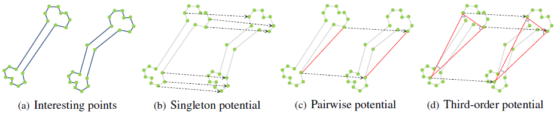
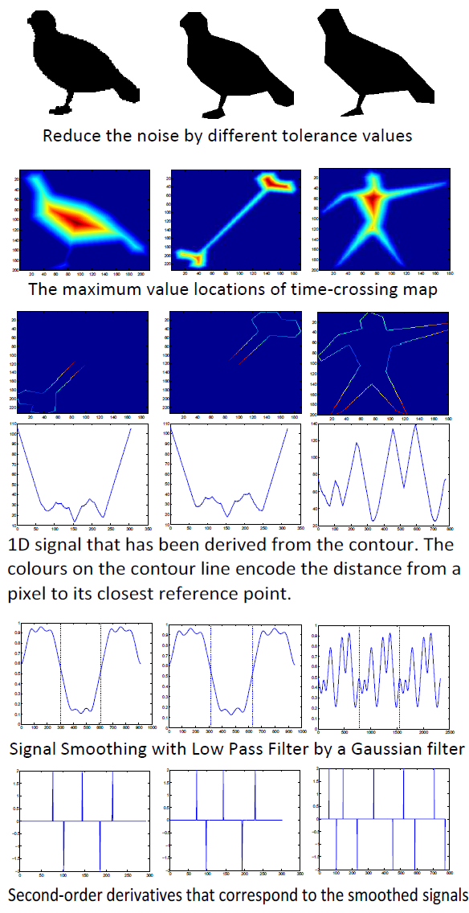
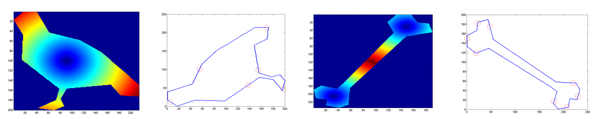
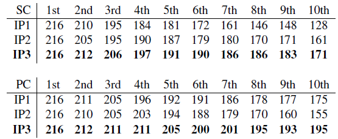
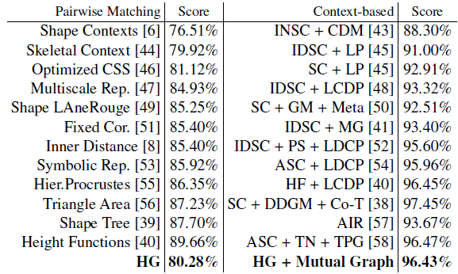

Pattern Recognition Letters
Cong Yang, Christian Feinen, Oliver Tiebe, Kimiaki Shirahama, Marcin Grzegorzek
Research Group for Pattern Recognition, University of Siegen

Figure1：Different potentials for object matching. Singleton point matching is a well-known assignment problem where the interesting point is matched with one point in another shape. For the pairwise matching (Figure 1(c)), it finds consistent correspondences between two pairs of interesting points by taking into consideration both how well their descriptors match and how similar their pairwise geometric relations are. For the high-order matching (mostly third-order, see Figure 1(d)), it considers the cost of matching three correspondences. More specifically, a triple of interesting points in a shape are matched with the one in another shape. With this observation, we propose a high-order graph matching strategy for improving the extraction of correspondences between interesting points.
Abstract
In shape-based object matching, it is important how to fuse similarities between points on a shape contour and the ones on another contour into the overall similarity. However, existing methods face two critical problems. Firstly, since most contour points are involved for possible matchings without taking into account the usefulness of each point, it causes high computational costs for point matching. Secondly, existing methods do not consider geometrical relations characterised by multiple points. In this paper, we propose a shape-based object matching method which is able to overcome these problems. To counteract the first problem mentioned, we devise a shape descriptor using a small number of interesting points which are generated by considering both curvatures and the overall shape trend. We also introduce a simple and highly discriminative point descriptor, namely Point Context, which represents the geometrical and topological location of each interesting point. For the second problem, we employ high-order graph matching which examines similarities for singleton, pairwise and triple relations of points. We validate the robustness and accuracy of our method through a series of experiments on six datasets.
Overview

Figure 2: Illustration of the proposed interesting point generation method.

Figure 3: Generated interesting points.
High-order Graph Matching:
\min\limits_{\mathbf{x} \in \zeta} \lbrace E(\mathbf{x} \vert \theta) = \sum\limits_{a \in P}\theta_{a}x_{a} + \sum\limits_{(a,b) \in P \times P}\theta_{ab}x_{a}x_{b} + \sum\limits_{(a,b,c) \in P \times P \times P}\theta_{abc}x_{a}x_{b}x_{c} \rbrace
Results
Table 1: Experimental comparison on Kimia216 dataset. SC: Shape Context descriptor, PC: The proposed point context descriptor, IP1: Interesting points detected by DCE method, IP2: Interesting points detected by visual curvature method, IP3: Interesting points detected by the proposed method.

Table 2: Bulls-eye score on the MPEG7 Dataset. HG denotes the proposed high-order matching method.

Acknowledgments
Research activities leading to this work have been supported by the China Scholarship Council (CSC) and the German Research Foundation (DFG) within the Research Training Group 1564 (GRK 1564).
BiBTex
@article {Yang2016SBO,
title = {Shape-based Object Matching using Interesting Points and High-order Graphs},
author = {Cong Yang and Christian Feinen and Oliver Tiebe and Kimiaki Shirahama and Marcin Grzegorzek},
journal = {Pattern Recognition Letters},
volume = {},
pages = {accepted for publication},
year = {2016},
}
Source Code: [Interesting Point Generation] [DCE] [High-order Matching]
Paper: PDF